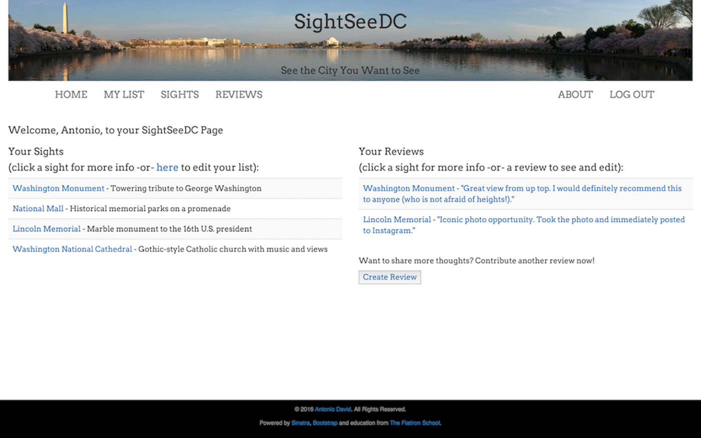

I plan every project and this is arguably the most important part. This involves understanding the general and specific goals of the application. This also involves creating a timeline for internal and external deliverables. Creating this guide with tangible goals gets me energized, making for an enjoyable development experience.
Coding
Using the plan, I translate the requirements into clean and clear code. Currently, I focus on Ruby on Rails, but I am open to any technology and ready to learn new languages, libraries, or frameworks. My goal is to code an efficient, adaptable, scalable application ready for real-world-use.
Improving
Throughout development and after launch, I engage in testing. I review the code and engage non-technical users to test-drive the application. Identifying problems early means they can be fixed with less time and effort. I aim to create applications that serve a purpose, delivering results when expected, as expected.
Portfolio
Live Projects Out in the Wild
TopTravelDestinations
Choose your next adventure from the TripAdvisor Travelers' Choice Destinations
Customized sightseeing plans informed by user-generated suggestions and reviews
AllergyFreeMeals
Allergy-conscious recipe application with “search by allergen” functionality
About Me
Dream. Design. Develop.
Welcome! I'm Antonio, a Full-Stack Software Developer. I believe that coding is a powerful tool for building things that improve peoples' lives everyday.
In order to get the robust knowledge needed to bring project ideas to life, I decided to learn to code. In 2016, I enrolled in the Flatiron School's Learn-Verified full-stack web development program, and I've been hooked on coding ever since.
When I'm not coding, I enjoy reading, cooking with my wife, and dreaming of world travels.
Contact Me
Let's Work Together!
TopTravelDestinations
Choose your next adventure from regions and cities on TripAdvisor Travelers' Choice Destinations via command line gem!
I love to travel. With that in mind, I decided to make a gem that would assist anyone with wanderlust in getting started with planning their next adventure. The general idea was to: (1) locate a reputable travel website; (2) identify general travel regions; and (3) list the specific recommended travel destinations within a region. The gem utilizes the Nokogiri gem to scrape information and features object-oriented design concepts, including collaborating objects and separation of concerns via multiple classes (Regions and Destinations).
Customize your DC sightseeing plan informed by user-generated attractions and reviews!

SightSeeDC helps people make custom DC sightseeing plans - a “have it your way” of touring. Crowdsourcing is a powerful tool and I wanted to incorporate reviews into this application. The general idea was to: (1) create a CRUD application using Sinatra, (2) permit users to create custom lists of sights, (3) submit reviews for sights, and (4), as the crowdsourcing component, look at plans and reviews of other users.
The application follows the MVC pattern and RESTful architecture, and also implements the BCrypt gem together with a Sessions controller for authentication. The front-end is styled using Bootstrap and custom HTML and CSS.
Find and contribute delicious, allergy-conscious recipes for you, your family and the community!
Cooking is one of the daily experiences I really enjoy - it is family-centric, relaxing, but also builds up with excitment to the point of eating! However, I am also trying to make sure that dining experiences as a family are always inclusive and allergy conscious. The general idea was to: (1) create a recipe-box application using Ruby on Rails; (2) accept user-contributed recipes via complex forms; and (3) enable "search-by-allergen" functionality to locate recipes that meet specific allergy needs.
The application manages related data through complex, nested forms and RESTful routes. It utilizes the Devise gem for standard authentication and Omniauth for Facebook login, as well as the Pundit gem for authorization. The front-end is styled using Bootstrap and custom HTML and CSS.